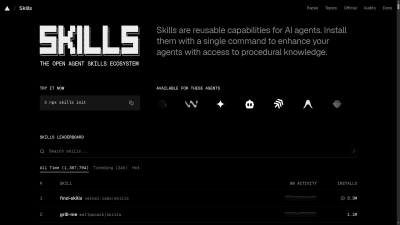

Seu Agente
Precisa de
Skills de Verdade
Sobre
Campitelli
- Bacharel em Ciência da Computação pela UFSCar
- Desenvolvedor há 20 anos
- Membro do PHPSP
- Entusiasta em cibersegurança
- Consultor de TI e instrutor de treinamentos
Slides
github.com/vcampitelli/slides-agente-skills-de-verdade
Definição
Skills são instruções especializadas que ensinam uma IA a executar determinado tipo de tarefa
Elas podem combinar:
- Conhecimento
- Regras
- Processos
- Ferramentas
- Exemplos
- Restrições
Skill = contexto + instruções + processo
O que são Skills?
Skills não são apenas prompts
Prompt:
Resolve uma tarefa específica uma única vez
"Analise este relatório"
Skill:
Descreve como executar uma classe de tarefas de forma consistente
"Como analisar relatórios financeiros, quais indicadores observar, como estruturar a análise e quais regras seguir"
O que são Skills?
Por que usar?
Skills permitem transformar conhecimento humano em algo que a IA pode reutilizar
Benefícios:
- Reutilização
- Consistência
- Contexto especializado
- Processos padronizados
- Escalabilidade
Indicações
Vamos ver algumas sugestões de skills populares do skills.sh:

Indicação: Find Skills
Skill que te ajuda a... encontrar outras skills!
Use this skill when the user:vercel-labs/skills
- Asks "how do I do X" where X might be a common task with an existing skill
- Says "find a skill for X" or "is there a skill for X"
- Asks "can you do X" where X is a specialized capability
- Expresses interest in extending agent capabilities
- Wants to search for tools, templates, or workflows
- Mentions they wish they had help with a specific domain (design, testing, deployment, etc.)
Indicação: Superpowers
Contém mais de 10 skills, entre elas:
- test-driven-development: ciclo RED-GREEN-REFACTOR do TDD
- brainstorming: transforma ideias em especificações
- requesting-code-review: dispara um subagente para fazer code review
Indicação: Caveman

why use many token when few do trickJuliusBrussee/caveman
Indicação: Caveman
The reason your React component is re-rendering is likely because you're creating a new object reference on each render cycle. When you pass an inline object as a prop, React's shallow comparison sees it as a different object every time, which triggers a re-render. I'd recommend using useMemo to memoize the object.
New object ref each render. Inline object prop = new ref = re-render. Wrap in `useMemo`.JuliusBrussee/caveman
Indicação: Anthropic Skills
Conjunto de skills da Anthropic, com destaque para:
- frontend-design: ajuda a criar ou melhorar interfaces através da definição da estética e tipografia, além de ajudar na tomada de decisões que evitam uma aparência padronizada ou genérica
-
canvas-design: cria imagens em arquivos
.pnge.pdfutilizando filosofias de design
Indicação: Ponytail
Makes your AI agent think like the laziest senior dev in the room. The best code is the code you never wrote.DietrichGebert/ponytail
Indicação: Skills do Matt Pocock
Talvez o conjunto mais famoso da atualidade, com destaque para:
-
grill-with-docs: sessão de análise crítica e aprofundamento para "estressar" o pensamento do usuário, atualizando
CONTEXT.mde ADRs - improve-codebase-architecture: analisa o código em busca de oportunidades de "aprofundamento"
- tdd: também aplica o ciclo do TDD
- teach: ensina um conceito ao usuário, permitindo resumir e voltar em "missões"
Criação
Crie um arquivo YAML com essa estrutura:
---
name: my-skill-name
description: A clear description of what this skill does and when to use it
---
# My Skill Name
[Add your instructions here that Claude will follow when this skill is active]
## Examples
- Example usage 1
- Example usage 2
## Guidelines
- Guideline 1
- Guideline 2
Criação
Defina o objetivo
Comece respondendo:
"O que esta Skill deve ensinar a IA a fazer?"
Evite objetivos genéricos
❌ "Ajudar com código"
✅ "Revisar Pull Requests seguindo nosso padrão de segurança e qualidade"
Criação
Defina quando usar
A IA precisa saber quando a Skill é relevante
Exemplos:
- Quando receber um Pull Request
- Quando analisar código de produção
- Quando gerar documentação de API
- Quando revisar uma arquitetura
Uma boa Skill também deixa claro quando não deve ser usada
Criação
Escreva o processo
Transforme conhecimento implícito em passos explícitos
1. Entender o contexto
2. Identificar os requisitos
3. Executar a análise
4. Validar os resultados
5. Produzir a resposta no formato definido
Quanto mais importante for a consistência, mais explícito deve ser o processo
Criação
Adicione regras
Regras reduzem ambiguidades
Exemplo:
- Nunca alterar código sem explicar o motivo
- Priorizar problemas de segurança
- Não assumir informações que não foram fornecidas
- Sinalizar incertezas explicitamente
Criação
Adicione exemplos
Exemplos mostram como aplicar as instruções na prática
Entrada → comportamento esperado → saída
Bons exemplos são especialmente úteis quando existem:
- Casos ambíguos
- Formatos específicos
- Regras difíceis de descrever
- Exceções
Criação
Criador
https://github.com/anthropics/skills/blob/main/skills/skill-creator/SKILL.mdDicas na criação de Skills
Seja específico
❌ Faça uma análise completa
✅ Verifique segurança, performance, legibilidade e cobertura de testes
Defina regras acionáveis
❌ Tenha cuidado com segurança
✅ Procure exposição de credenciais, validação insuficiente de entrada e vulnerabilidades de autorização
Dicas na criação de Skills
Skills muito grandes ficam difíceis de entender, manter e reutilizar
Documentação humana explica o porquê:
❌ Nosso código segue boas práticas de segurança
Skills precisam deixar claro o como:
✅ Verifique regras de permissionamento e expiração de credenciais
Dicas na criação de Skills
Uma Skill robusta também responde:
"E se algo der errado?"
Defina o comportamento para:
- Informação ausente
- Entrada inválida
- Caso ambíguo
- Conflito entre regras
- Falha de ferramenta
Dicas na criação de Skills
Não basta apenas escrever, é preciso testar com diferentes entradas
Verifique se a IA...
- executou o processo esperado?
- seguiu as regras?
- inventou informações?
- ignorou alguma instrução?
- funcionou em casos diferentes?
Dicas na criação de Skills
Uma boa Skill é específica, previsível e fácil de manter
Faça
- Defina uma responsabilidade clara
- Escreva instruções objetivas e acionáveis
- Explique quando usar a Skill
- Inclua exemplos de entrada → saída esperada
- Explicite regras e casos de exceção
- Defina o formato da resposta quando necessário
- Teste com casos reais e casos extremos
Evite
- Instruções genéricas como "faça o seu melhor"
- Skills que tentam resolver problemas demais
- Regras vagas ou subjetivas
- Contexto desnecessário
- Instruções contraditórias
- Depender de informações que a IA não possui
- Criar uma Skill sem testar seu comportamento
Dicas na criação de Skills
Skill como código
Uma forma útil de pensar:
Skill
↓
Especificação
↓
Implementação
↓
Teste
↓
Iteração
A Skill não é um texto estático
Ela é uma peça de software aplicada ao comportamento da IA
Dicas na criação de Skills
Checklist
- Objetivo claro
- Quando usar bem definido
- Processo explícito
- Regras objetivas
- Exemplos relevantes
- Exceções consideradas
- Formato de saída bem definido
- Testes realizados